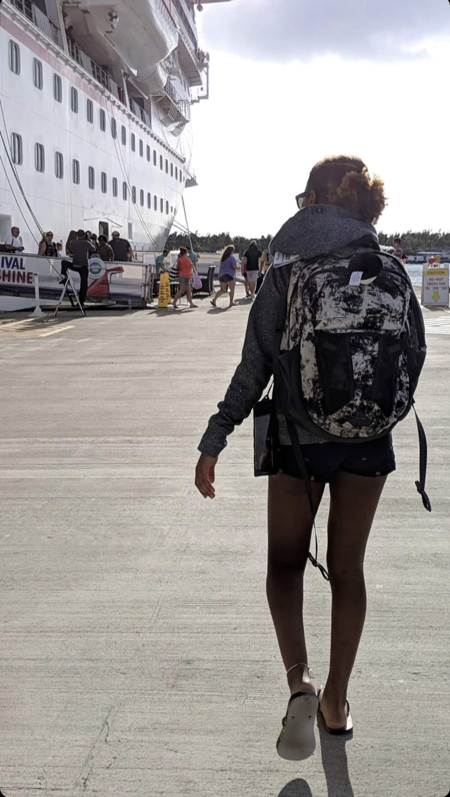
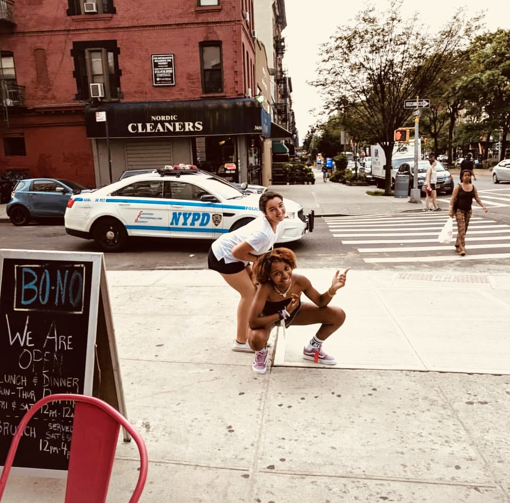

It's all about Meeee
Established April 3, 2002
Follow me into my not so interesting life...
Yellow! My name is Jala often go by the name Jay. I have 4 brothers and 1 sister. I was born and raised in Boston, but currently live in Broketown...oops I meant Brockton. I grew up always are boys which kinda built me physically tougher than most. I grew up like the average human in poverty.. ig, made a come up. By 16 I started to play a game called ticket to ride and brought it in to the real world which is now know as the "Wavy Tour" which is basically my world tour.
So far in my tour Ihave hit places like..
idk about this yet
Some..
Idk what im doing with this yet...
Student Athlete

I began swimming when i was 2, did ballet when i was 4, gymnastics when i was 5, by 6 I was playing basketball till i was 10, i became a cheerleader, and to be honest i forget what other sports I did. Growing up, hundreds of thousands of young athletes dream of playing college sports. Then reality sets in. Everyone on your JV soccer team isn’t getting a full ride to North Carolina or UCLA. There comes a time when your illustrious high school sports career comes to end. There are no more halftime oranges or road trips on the short yellow bus. Only a select few athletes continue on to the college level, others are left to imagine what could have been. From the outside looking in college student-athletes seem to be indulged in a lifestyle similar to the rich and famous. It seems that for a college student-athlete just about everything is free, and if you need someone to hold your hand for four years, that can be arranged.
More Of Me!
Image
Image
Image